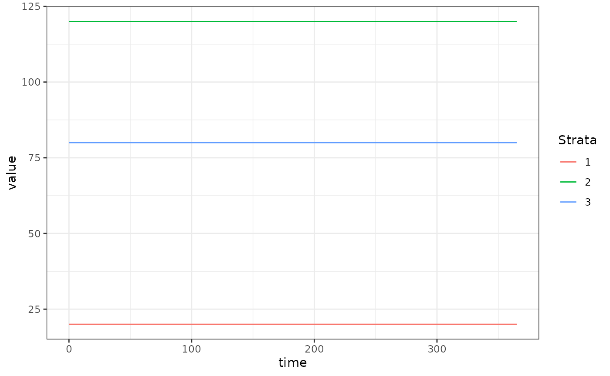

The SIS (Susceptible-Infected-Susceptible) human model model fulfills the generic interface of the human population component. It is the simplest model of endemic diseases in humans.
Let the generalized SIS human model be:
\[ \dot{X} = \mbox{diag}(bEIR) \cdot (H-X) - rX \]
A typical situation when using this model is that \(H\) (total population size by strata) and \(X\) (number of infectious persons by strata) are known from census and survey data. Then it is of interest to find the value of \(EIR\) (Entomological Inoculation Rate) which leads to that prevalence at equilibrium.
\[ 0 = \mbox{diag}(bEIR) \cdot (H-X) - rX \]
\[ rX = \mbox{diag}(b) \cdot \mbox{diag}(EIR) \cdot (H-X) \]
\[ \frac{rX}{H-X} = \mbox{diag}(b) \cdot \mbox{diag}(EIR) \]
\[ \mbox{diag}(1/b) \cdot \left(\frac{rX}{H-X}\right) = EIR \]
Note that in the final line, \(EIR\) is a column vector of dimension \(n\) due to the operations on the left. Each element gives the per-capita rate at which individuals in that population strata receive potentially infectious bites (summing across all the places they visit).
Here we run a simple example with 3 population strata at equilibrium.
We use exDE::make_parameters_X_SIS to set up parameters.
Please note that this only runs the human population component and that
most users should read our fully worked
example to run a full simulation.
We use the null (constant) model of human demography (\(H\) constant for all time).
nStrata <- 3
H <- c(100, 500, 250)
membershipH <- rep(1,3)
searchWtsH <- rep(1,3)
X <- c(20, 120, 80)
b <- 0.55
c <- 0.15
r <- 1/200
Psi <- matrix(data = 1,nrow = 1, ncol = nStrata)
EIR <- diag(1/b, nStrata) %*% ((r*X)/(H-X))
params <- list(
nStrata = nStrata
)
params = make_parameters_demography_null(pars = params, H=H,
membershipH = membershipH, searchWtsH = searchWtsH,
TimeSpent = Psi)
params = make_parameters_X_SIS(pars = params, b = b, c = c, r = r)
params = make_inits_X_SIS(pars = params, X)
params = make_indices(params)
y0 <- get_inits_X(params)
dXdt_local = function(t, y, pars, EIR) {
list(dXdt(t, y, pars, EIR))
}
out <- deSolve::ode(y = y0, times = c(0, 365), dXdt_local, parms = params, method = 'lsoda', EIR = as.vector(EIR))
colnames(out)[params$X_ix+1] <- paste0('X_', 1:params$nStrata)
out <- as.data.table(out)
out <- melt(out, id.vars = 'time')
out[, c("Component", "Strata") := tstrsplit(variable, '_', fixed = TRUE)]
out[, variable := NULL]
ggplot(data = out, mapping = aes(x = time, y = value, color = Strata)) +
geom_line() +
theme_bw()